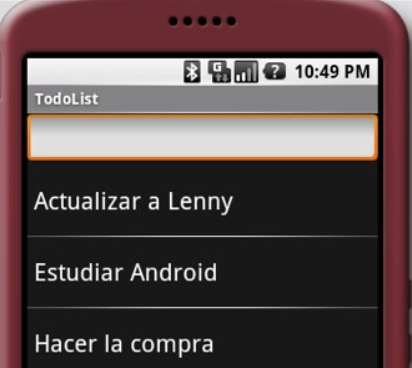

Datenbanken 1
Kapitel 6: Anwendungsentwicklung
2020-01-14
In diesem Kapitel erstellen wir...
... Java-Anwendungen, die mit JDBC mit der Datenbank kommunizieren,
... Funktionen und Prozeduren direkt in der Datenbank,
... Trigger,
... Indexe.
Anwendungsentwicklung
Lauffähige Anwendung in Java, C++, Python, PHP, ...
Konsolenprogramm, GUI, App, Serverprozess, ...
Komponenten:
Connection (Aufbau einer Verbindung zur DB)
Statement (Ausführung einer SQL-Anfrage)
PreparedStatement (Statement mit Platzhaltern)
ResultSet (Ergebnis einer ausgeführten Anfrage)
Im ersten Teil dieses Kapitels betrachten wir Anwendungen, die nicht in der Datenbank laufen, sondern eigenständig sind. Sie stellen eine Verbindung zur Datenbank her, um an diese Anfragen zu schicken und die Ergebnisse dieser Anfragen zu verarbeiten.
Beispielanwendungen
Konsolenprogramm
GUI / App

Das Python-Programm links stellt eine Verbindung mit einer Datenbank her, stellt eine SELECT-Anfrage und zeigt die Ergebnisse auf der Konsole an. Die Android-Anwendung rechts ist eine Todo-App (Bildquelle: Antonio Pardo, https://www.flickr.com/photos/apardo/3323321813). Diese Anwendung läuft lokal ohne Internetzugriff und speichert die Daten in eine SQLite-Datenbank, die auf dem Handy gespeichert ist.
Anwendungsserver
Java EE, JSP, Java Servlets, .NET, PHP, Django, ...
Endanwendung (z. B. Webbrowser) → Anwendungsserver → Datenbank
Das hier gezeigte Tablet stellt keine direkte Verbindung zu einer Datenbank her, um die Daten für die Diagramme zu laden. Ansonsten könnte der Nutzer der App eventuell sogar die DB-Benutzerdaten auslesen. Stattdessen läuft auf einem Webserver eine Anwendung, welche mit der Datenbank interagiert und eine HTML-Seite erzeugt. Diese ruft der Browser des Tablets auf und zeigt sie an. Auch die Todo-App der vorherigen Folie könnte Server-basiert realisiert werden. In dem Fall reicht es, dass der Anwendungsserver die Daten als JSON oder XML bereitstellt, sodass die Smartphone-App diese dann entsprechend darstellen kann.
Embedded SQL
Ansatz: SQL-Anfragen und Programmcode mischen,
Beispiel: SQL Object-Language Bindings (OLB) für Java (vormals SQLJ)
ProdukteIterator iter;
#sql iter = { SELECT bezeichnung, preis FROM produkte };
do {
#sql { FETCH :iter INTO :bezeichnung, :preis };
System.out.println(bezeichnung+" kostet "+preis+" EUR");
} while (!iter.endFetch());
iter.close();Vorteil: Syntaxüberprüfung der Anfrage und Prüfung auf gültige Tabellen- und Spaltennamen kann bereits bei der Compile-Zeit erfolgen.
Die Zeilen, die im Beispielcode mit #sql beginnen, werden vom Precompiler in Java-Code übersetzt. Gleichzeitig erfolgt eine Überprüfung, ob die Anfrage syntaktisch korrekt ist. Neben dem Java-Programm wird auch eine Profil-Datei erzeugt, die in die Datenbank gespeichert werden kann. Die Datenbank würde dabei einen Fehler liefern, wenn z. B. ein ungültiger Spaltenname verwendet wurde.
JDBC
SQL-Anfragen werden API-Methoden als Strings übergeben.
Vorteile: Flexibel (Anfragen können dynamisch zur Laufzeit generiert werden), kein Precompiler nötig, kompatibel mit allen Java-IDEs und vielen Frameworks.
JDBC (Java Database Connectivity) ist eine universelle API-Schnittstelle für die Programmiersprache Java.
Driver
Jedes DBMS hat seinen eigenen JDBC-Treiber: MySQL, PostgreSQL, Oracle, ...
⇒ Entsprechende Jar herunterladen und dem Java-Projekt zur Verfügung stellen
Nun kann über die Klasse DriverManager eine Verbindung aufgebaut werden.
Bis Java 1.6 war es nötig, den Treiber mittels Class.forName("org.postgresql.Driver"); zu laden. Mittlerweile unterstützen die meisten JDBC-Treiber den Java Service Provider-Mechanismus, sodass der Treiber automatisch geladen wird, den die JVM im Classpath findet.
Connection
Eine JDBC-URL besteht aus jdbc:, dem Treiber-Namen, der Adresse des DB-Servers, dem Datenbanknamen und evtl. weiteren optionalen Properties. DriverManager.getConnection stellt eine Verbindung zur Datenbank her und liefert ein Connection-Objekt zurück. Mittels dieses Objekts kann nun mit der Datenbank gearbeitet werden. Tritt ein Fehler beim Verbinden auf (z. B. falsches Passwort), wird eine SQLException geworfen. Auch andere Methoden, z. B. diejenigen, die Anfragen an die Datenbank schicken, werfen im Fehlerfall ebendiese Exception.
Statement und ResultSet
Um eine Anfrage an die Datenbank zu schicken, kann auf der vorhandenen Connectionein Statement-Objekt erzeugt werden. Eine Anfrage wird mit der executeQuery- oder executeUpdate-Methode an die Datenbank geschickt. Erstere liefert ein ResultSet zurück, zweitere dient zur Ausführung von INSERT, UPDATE, DELETE, usw. und liefert die Anzahl der betroffenen Zeilen zurück.ResultSet kann mittels der next()-Methode iteriert werden. next() liefert false, wenn wir am Ende der Ergebnismenge angekommen sind. Wie im Beispiel gezeigt, kann man mit einer While-Schleife Zeile für Zeile über das Ergebnis einer ausgeführten Anfrage iterieren. In jeder Iteration stehen einem Datentyp-spezifische Methoden bereit, um auf die Spaltenwerte der aktuellen Zeile zuzugreifen; entweder über die Position (beginnend mit 1) oder über das Spaltenlabel: rs.getString(1) und rs.getString("bezeichnung") liefert beides den Wert der Ergebnisspalte "bezeichnung".
SQL-Injections
Anderes Beispiel: Login-Formular
ResultSet rs = st.executeQuery("SELECT COUNT(*) " +
"FROM webshop.kunden " +
"WHERE email = '"+email+"' " +
"AND passwort = md5('"+pass+"')";Dadurch dass der Hacker hier mit dem Anführungszeichen den String abschließt und mittels -- den Rest der Anfrage auskommentiert, ergibt sich eine gültige Anfrage, welche lediglich überprüft, ob es den Benutzer gibt und nicht, ob das Passwort stimmt. Im Endeffekt wird ausgeführt: SELECT COUNT(*) FROM webshop.kunden WHERE email = 'peter@example.com' -- AND passwort = md5(''). Alles ab -- wird ignoriert. Andere Hacks sind möglich mit ' OR 1=1 -- oder Ähnlichem.